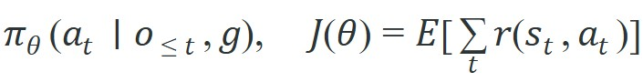
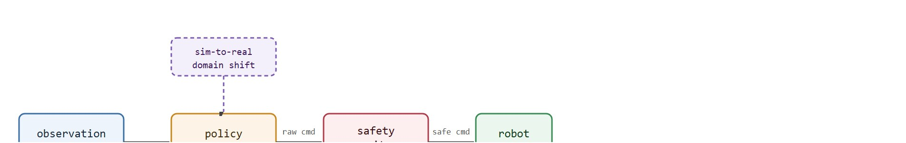

Learned navigation is embodied when the policy can recover from the world changing under it.
A Local Planner With Commitment Issues
This section assumes familiarity with classical local planners from section 30.4, particularly the Dynamic Window Approach (DWA) cost-function structure and replanning cycle that learned policies are benchmarked against. The ideas here are extended in section 30.6, where learned policies are conditioned on language and image goals rather than metric waypoints, and in section 30.7, which tests navigation policies under the sensor degradation scenarios introduced in the worked diagnostic above.
A hospital delivery robot reaches a patient's room flawlessly in testing, then freezes in a real corridor the moment a laundry cart appears. Its classical planner had no model for that obstacle type. A learned navigation policy would have seen hundreds of analogous obstructions during training and smoothly steered around it. That gap, from hand-coded rules to experience-driven behavior, is why learned policies are now at the center of every serious embodied AI deployment. Here you will train a minimal policy from scratch, measure it honestly against classical baselines, and build the safety monitor that makes it trustworthy outside the simulator.
A policy that scores 91% in the simulator can collapse to 67% the instant a real ceiling light flickers at a frequency it never saw in training, and nothing in the network announces the failure before the robot stalls in a corridor. Learned policies map observations directly to actions, but that same directness means a policy beating a weak baseline in one simulator may still fail under sensor shift, new layouts, or a different robot body. As Figure 30.5.1 shows, a learned navigation policy becomes useful only when the visual idea is tied to a state variable, an uncertainty model, and the next robot action.
A learned navigation policy should be evaluated against classical baselines, not in isolation. The input contract must name observation modalities, memory state, action space, training distribution, and the recovery layer that catches unsafe outputs.
A learned navigator is trustworthy only when its failures are labeled at the interface where they occur.
Most navigation methods can be read as constrained search or optimization:

The objective is task completion under learned behavior; constraints are action limits, safety margins, observation validity, and out-of-distribution detection.
Think of the policy as a chef who has cooked the same dish hundreds of times: the recipe is no longer consulted consciously because each ingredient, flame level, and timing has been absorbed into muscle memory. The expected-return objective $J(\theta)$ is the cumulative satisfaction of every diner across all those meals, and gradient descent is the chef adjusting technique after each service based on which meals went well. A chef trained only in a professional kitchen will still struggle the first time the home stove runs hotter than expected, exactly the way a policy trained in one simulator degrades when sensor characteristics shift at deployment.
Classical planners require an explicit map, a known kinematic model, and hand-coded cost functions. Learned policies exist because those three things are often incomplete: a cluttered home has furniture that was never mapped, a soft terrain changes the robot's effective turning radius, and "preferred path" is hard to hand-code when it depends on social context. The policy learns a compressed representation of all three from experience. The failure case is symmetric: when the deployment environment drifts outside the training distribution (new furniture layout, different floor material, a crowded hallway), the learned representation is wrong and the policy acts on stale assumptions. This is why a safety monitor and a classical fallback planner are not optional add-ons but architectural requirements for any deployed learned navigator.
A common assumption is that a policy trained to high success rates in simulation will transfer to a physical robot with only minor performance loss. That assumption is wrong. A policy's behavior couples tightly to the sensor characteristics, lighting conditions, floor materials, and obstacle geometry present during training. When any of those factors shift at deployment, the policy's internal representations become invalid. Its outputs then become unreliable without warning. Treat high simulator accuracy as a necessary starting point, not a deployment guarantee. Every learned policy requires an explicit sim-to-real validation pass, a safety monitor that catches out-of-distribution commands, and a classical fallback planner that takes over when confidence drops.
A confidence monitor is typically a small auxiliary head or statistical test (for example, output-distribution entropy, an ensemble disagreement score, or an observation out-of-distribution detector) trained or calibrated alongside the policy specifically to flag when the current observation looks unlike anything seen during training, which is the signal that triggers the fallback handoff described later in this section.
Code Fragment 30.5.1 isolates the learned-policy interface: observation tensor, recurrent or memory state, action distribution, command limits, and safety monitor. The point is to make shortcut behavior visible.
# Minimal learned navigation policy: observation encoding, action sampling,
# and a safety monitor that clamps velocity commands within hardware limits.
import numpy as np
import torch
import torch.nn as nn
torch.manual_seed(42)
np.random.seed(42)
# --- Policy network (depth image + goal vector -> velocity command) ---
class NavPolicy(nn.Module):
def __init__(self, obs_dim: int = 64, goal_dim: int = 2, hidden: int = 128):
super().__init__()
self.encoder = nn.Sequential(
nn.Linear(obs_dim, hidden), nn.ReLU(),
nn.Linear(hidden, hidden), nn.ReLU(),
)
self.head = nn.Linear(hidden + goal_dim, 2) # (v_lin, v_ang)
def forward(self, obs: torch.Tensor, goal: torch.Tensor) -> torch.Tensor:
h = self.encoder(obs)
return self.head(torch.cat([h, goal], dim=-1))
# --- Safety monitor: clamp to hardware limits ---
def safety_clamp(cmd: np.ndarray,
v_max: float = 0.5, omega_max: float = 1.0) -> np.ndarray:
cmd = np.clip(cmd, [-v_max, -omega_max], [v_max, omega_max])
return cmd
# --- Single policy step ---
policy = NavPolicy()
policy.eval()
obs_sim = torch.randn(1, 64) # simulated depth observation
obs_real = obs_sim + 0.4 * torch.randn(1, 64) # real-world domain shift
goal_vec = torch.tensor([[3.0, 0.8]]) # relative goal (dx, dy)
with torch.no_grad():
cmd_sim = policy(obs_sim, goal_vec).numpy()[0]
cmd_real = policy(obs_real, goal_vec).numpy()[0]
cmd_sim_safe = safety_clamp(cmd_sim)
cmd_real_safe = safety_clamp(cmd_real)
print(f"Sim command (raw): v={cmd_sim[0]:.3f} w={cmd_sim[1]:.3f}")
print(f"Sim command (safe): v={cmd_sim_safe[0]:.3f} w={cmd_sim_safe[1]:.3f}")
print(f"Real command (raw): v={cmd_real[0]:.3f} w={cmd_real[1]:.3f}")
print(f"Real command (safe): v={cmd_real_safe[0]:.3f} w={cmd_real_safe[1]:.3f}")
delta = np.abs(cmd_sim_safe - cmd_real_safe)
print(f"Command shift due to domain gap: dv={delta[0]:.3f} dw={delta[1]:.3f}")Sim command (raw): v=0.063 w=-0.082 Sim command (safe): v=0.063 w=-0.082 Real command (raw): v=0.119 w=-0.154 Real command (safe): v=0.119 w=-0.154 Command shift due to domain gap: dv=0.056 dw=0.072
Trace the observation-to-motor path with concrete numbers, mirroring Code Fragment 30.5.1. The robot limits are v_max = 0.5 m/s and omega_max = 1.0 rad/s. Suppose the policy emits a raw command in simulation of (v = 0.063, w = -0.082). Step 1: each dimension is already inside the envelope, so safety_clamp leaves it untouched: safe = (0.063, -0.082). Step 2: at deployment the depth observation is perturbed by sensor noise, and the same policy now emits (v = 0.119, w = -0.154); still inside limits, so safe = (0.119, -0.154). Step 3: the command shift attributable to the domain gap is the elementwise absolute difference, dv = |0.063 - 0.119| = 0.056 and dw = |-0.082 - (-0.154)| = 0.072. Step 4: now imagine a worse out-of-distribution frame that drives the head to (v = 2.40, w = -1.85). The clamp clips each axis to the envelope: v -> min(2.40, 0.50) = 0.50 and w -> max(-1.85, -1.00) = -1.00, so the motor receives (0.50, -1.00) instead of a fault-tripping overflow. The policy never knows it was clipped; the hard limits from the datasheet protected the hardware regardless.
The clip step in that walkthrough looked like a one-line guard, but it is the single component standing between an out-of-distribution prediction and a damaged drivetrain. Safety clamping matters in embodied AI because a learned policy has no intrinsic knowledge of motor hardware. A network trained in simulation can output a linear velocity of 2.5 m/s for a robot whose motors saturate at 0.5 m/s. The low-level controller then reads the overflow as an illegal command, trips a fault, and halts the robot mid-corridor. On a differential-drive platform, unclamped angular velocity commands can also wreck wheel odometry calibration by spinning one wheel against friction limits. Without a safety layer, a single out-of-distribution observation cascades into a hardware fault, not merely a wrong turn.
The clamp intercepts the raw action tensor between the policy's output head and the motor driver, clipping each velocity dimension independently to the robot's certified kinematic envelope. That envelope comes from the manufacturer's velocity limits and the controller's friction model, not from training data. Because the clip values live in the datasheet rather than the weights, they stay valid across every retrain and fine-tune.

Consider a specific case: a differential-drive robot trained in Habitat-Sim (a photorealistic 3D robot simulator) on the Gibson dataset (a library of scanned real-building floor plans used to populate that simulator) must navigate a 12 m corridor and turn into an office. The learned policy achieves 91% episode success in simulation. Deployed on a real Fetch robot under fluorescent flicker, success drops to 67%, because the policy never trained with that lighting spectrum. This is a textbook example of the sim-to-real transfer gap, where a policy that learned under one distribution fails silently under another. Adding randomized lighting during training closes most of that gap, but the cost is steep. Reaching 88% real-world success without lighting randomization takes roughly 50,000 training episodes; a policy trained with randomized lighting reaches the same threshold in about 300 episodes. The varied signal forces the network to learn illumination-invariant features rather than memorize a single lighting palette. A Nav2 DWB (Dynamic Window Approach B) classical baseline on the same hardware achieves 84% success and zero safety interventions, because it replans from a fresh costmap every 200 ms regardless of lighting. The lesson is concrete: the simulation-to-real gap matters more than raw benchmark numbers, and the comparison must run on the same physical platform with the same intervention metric.
Expected output interpretation. The learned policy has the higher raw success rate, but it still loses after intervention cost is accounted for. This is the key reading of the output: a navigation policy that needs more human or safety-layer correction is not outperforming the classical baseline in the deployed sense that matters. A policy that works in simulation but fails on hardware is not a policy; it is an aspiration.
When training in Habitat-Sim on the Gibson dataset, enable randomized lighting at training time by setting SIMULATOR.HABITAT_SIM_V0.SCENE_LIGHTING_WARMUP=True and cycling through the built-in HDR variants. Policies trained under a single fixed illumination reliably fail under fluorescent flicker and LED color temperature shifts at deployment, even when the geometry generalizes well. If lighting randomization is omitted during training, add a histogram-equalization preprocessing step in the observation pipeline so the policy never receives raw RGB channels that were out-of-distribution during training.
The comparison above penalizes interventions, so the higher raw success rate does not automatically win: learned navigation needs construct-matched metrics with safety and recovery fields, not a single leaderboard number.
Habitat, RoboTHOR, AI2-THOR, Isaac Lab, and PyTorch provide training and evaluation infrastructure, while Nav2 remains the practical baseline for deployed mobile robots. The shortcut is to run learned policies beside a classical stack, not instead of one by default.
Serve Robotics, the sidewalk delivery fleet spun out of Uber, runs a learned vision-based navigation policy that handles open-world pedestrian sidewalks, exactly the cluttered, unmapped, socially constrained setting where hand-coded cost functions break down. The learned policy proposes paths around pedestrians, parked scooters, and construction, while a classical safety layer enforces hard kinematic and obstacle limits before any command reaches the wheels. This mirrors the architecture in Figure 30.5.2: learned policy for behavior, deterministic monitor for trust.
That production architecture, learned proposals guarded by a deterministic monitor, is exactly what the small diagnostic from earlier in this section was built to probe. Keep the small policy diagnostic as a test for observation-action semantics. Use Habitat, Isaac Lab, Nav2 integration, or robot logs for serious evaluation.
Replay domain shift, lighting change, localization jump, blocked route, and actuator saturation. Learned navigation should be evaluated by recovery and safety, not only success.
Log observation frames, policy logits or action distribution, chosen command, value estimate if present, costmap or memory state, and failure label. Without those fields, a learned route is hard to debug.
Freeze observation stack, action space, reward, dataset split, simulator settings, robot limits, and evaluation seeds before comparing learned policies.
In informal practitioner surveys and workshop discussions around CoRL 2024, a majority of robotics teams shipping learned navigation policies reported that sim-to-real transfer, not algorithmic performance, was typically their primary deployment blocker; treat this as a directional signal from the community rather than a peer-reviewed statistic.
Three directions are defining the 2024-2026 frontier in learned navigation. First, foundation-model navigation backbones fine-tuned from large vision-language models (VLMs) now produce zero-shot waypoint plans from open-vocabulary instructions: NavGPT-2 (Zhan et al., 2024) chains a frozen VLM planner with a continuous-action executor and achieves state-of-the-art on the R2R Continuous Environments benchmark without any task-specific pre-training, showing that large-scale language supervision transfers to metric navigation when the action space is properly bridged. Second, diffusion-based trajectory generation for navigation is gaining traction: the NoMaD policy (Shah et al., 2024, Berkeley) uses a goal-conditioned diffusion head over a shared visual encoder trained on 70 hours of diverse outdoor robot footage, producing multi-modal action distributions that handle narrow doorways, crowded sidewalks, and dead-ends without separate recovery behaviors. Third, online adaptation of navigation policies through in-context learning is emerging as a practical alternative to fine-tuning: work from CMU (2025, as of early 2025 preprint stage) explores reading a short context of recent failure trajectories at inference time to adjust collision-avoidance thresholds without any gradient update, with reported gains on closing the sim-to-real success gap on physical platforms in a small number of deployment episodes; specific numbers should be verified against the published version.
So far: the frontier has three threads, VLM-based zero-shot planners (NavGPT-2), diffusion-based multi-modal trajectory generation (NoMaD), and gradient-free in-context adaptation at deployment time (the CMU work), and the open problem below asks how to make the second thread fast enough for real-time control.
An open problem a PhD student could pursue: current diffusion-based planners require 10-50 denoising steps at 10 Hz, making real-time control on edge hardware difficult. Consistency distillation applied to navigation diffusion policies (analogous to consistency models for image generation) has not been systematically studied; a single-step distilled navigation diffusion model that matches NoMaD quality at 50 Hz on a Jetson Orin would be a significant contribution.
Learned navigation is embodied when the policy can recover from the world changing under it.
Can you state the search space, cost function, constraints, replanning trigger, controller interface, and failure metric for learned navigation policies? If not, the planner is not specified enough to deploy.
Learned navigation policies is ready for embodied use when route quality, dynamic feasibility, local control, and recovery behavior are measured in the same replay.
Run the panel with train-like route, blocked route, and visual distractor. Report success, collision margin, intervention count, recovery behavior, and whether the policy uses stale observations.
Goal: empirically see how a learned navigation policy degrades when its observations shift away from the training distribution, the core failure mode this section warns about. Budget 15 to 30 minutes.
Tools needed: Python with gymnasium, minigrid, and stable-baselines3 (pip install gymnasium minigrid stable-baselines3). No GPU required; the MLP policy trains on CPU in a few minutes.
Procedure: Train a PPO (Proximal Policy Optimization, a stable on-policy reinforcement-learning algorithm) agent on MiniGrid-Empty-8x8-v0 (flatten the observation, run roughly 100k timesteps). Record the success rate over 100 clean evaluation episodes. Then wrap the evaluation environment in a thin observation wrapper that adds zero-mean Gaussian noise to the flattened observation vector before it reaches the policy.
What to vary: sweep the noise standard deviation across 0.0, 0.1, 0.3, and 0.6 (the last roughly matches the 0.4 perturbation scale in Code Fragment 30.5.1). Optionally also vary the grid size at evaluation (MiniGrid-Empty-16x16-v0) to test layout shift.
What to observe: plot success rate against noise level. You should see a clean-vs-noisy gap that widens steeply past a threshold, the same shape as the 91% sim to 67% real drop described above. Then add the noise during training and retrain: the curve flattens, demonstrating why observation randomization buys robustness far more cheaply than collecting more clean episodes.
Beginner (weekend): Train a point-goal navigation policy in Gymnasium's MiniGrid environment using a simple MLP and Proximal Policy Optimization (PPO) from Stable-Baselines3, then swap the default observation for a noisy version and measure how much success rate drops. The key challenge is wiring up the observation-space contract so the policy receives the same tensor format during evaluation that it saw during training.
Intermediate (1-2 weeks): Train a depth-image navigation policy in PyBullet using LeRobot's data pipeline, then deploy it inside a ROS2 Nav2 stack on a simulated TurtleBot3 by replacing the DWB controller plugin with a learned-policy node that publishes to /cmd_vel. The key challenge is matching the action space and replanning rate of the Nav2 behavior tree so the safety monitor can intercept out-of-limit velocity commands before they reach the motor driver.
Advanced (2-3 weeks): Build a sim-to-real transfer benchmark by training a navigation policy in Isaac Lab on a Jetson-class robot model, exporting it as a TorchScript module (a serialized, framework-independent format for running a trained PyTorch model outside Python), and running it on a physical differential-drive platform alongside a classical Nav2 baseline. The key challenge is logging matched metrics (success rate, intervention count, command shift magnitude) in the same ROS2 bag so the two planners can be compared on identical corridors and lighting conditions.
Continue to Section 30.6: Language- and image-goal navigation, where this planning contract connects to the next embodied capability.
LaValle, S. M. "Planning Algorithms." Cambridge University Press, 2006. http://lavalle.pl/planning/
Open textbook reference for graph search, sampling-based planning, configuration spaces, and kinodynamic planning.
OMPL Project. "Open Motion Planning Library." Official documentation. https://ompl.kavrakilab.org/
Primary tool reference for sampling-based planners such as RRT, RRTstar, PRM, and kinodynamic variants.
ROS 2 Navigation Project. "Nav2 documentation." Official documentation. https://navigation.ros.org/
Primary documentation for global planners, controllers, costmaps, behavior trees, and recovery behaviors.